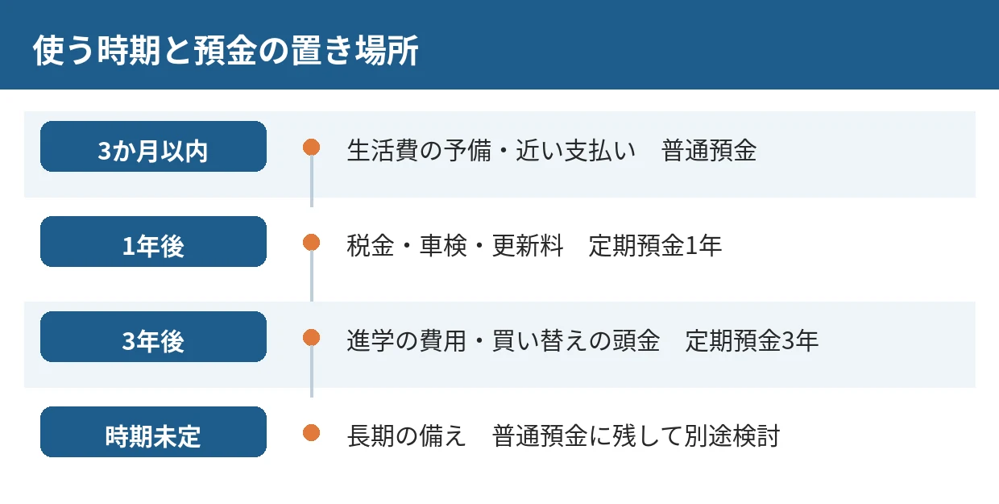

使う時期が決まっているお金 普通預金と定期預金の比べ方
使う時期が決まっているお金は、普通預金と定期預金のどちらに置くか。300万円を1年預けた場合の利息の差は税引前で6千円です。使う時期で分ける目安と注意点を、利息の計算つきで整理します。
この記事の要点
- 使う時期が決まっていて、その間に引き出す予定がないお金は、定期預金のほうが利息は多くなります。300万円を1年預けた場合の差は、税引前で6千円です
- 近い時期に使うお金と、時期が決まっていないお金は、普通預金に残すのが基本です
- 比べるときは、金利の高さだけでなく、満期と使う時期が合っているか、中途解約の扱いはどうかまで含めて確認することが大切です
制度・金額の確認日 2026年11月20日
金額の例をもとに比べ方を整理した記事です。ご家庭の数字はモデルケースの仮定で、金利は2026年11月20日に確認しています
この記事で比べること
「使う時期が決まっているお金は、普通預金と定期預金のどちらに置くのがよいか」。ご相談で多いのは、進学の費用や車の買い替えの費用など、使う時期が決まっているお金の置き場所です。
比べるときの軸は、金利の差だけではありません。使う時期までの長さと、その間に引き出す必要が出るかどうかを合わせて考えることが大切です。山田さんご夫婦の例で、利息の金額を計算しながら比べていきます。
例にするご家庭
- 夫（42歳）と妻（40歳）の共働きで、お子さまは中学1年生です
- 預貯金は合計で650万円あります。このうち300万円は、3年後の高校進学に向けた費用として分けてあります
- ほかに、1年後に払う固定資産税と車検の費用として60万円、時期の決まっていない長期の備えとして残りを置いています
金利の確認（2026年11月20日確認）
ゆうちょ銀行の金利（2026年11月16日現在）は、次のとおりです。いずれも税引前の年利です。
- 通常貯金（普通預金にあたる貯金） 年0.500パーセント
- 定期貯金 1年 年0.700パーセント
- 定期貯金 3年 年0.900パーセント
- 定期貯金 5年 年1.100パーセント
普通預金の金利は、金融機関によって呼び方が異なります。ゆうちょ銀行では通常貯金が普通預金にあたります。金利は変わることがありますので、預けるときに各金融機関で最新の金利を確認することが大切です。
利息はいくら違うのか
100万円を1年間預けた場合の利息は、次のとおりです。利息には20.315パーセントの税金がかかるため、税引後の金額もあわせて計算しています。税引後は概算です。
- 通常貯金 利息5千円（税引後 約3,980円）
- 定期貯金1年 利息7千円（税引後 約5,580円）
- 差 税引前で2千円、税引後で約1,600円
300万円を1年間預けた場合は、次のとおりです。
- 通常貯金 利息1万5千円（税引後 約1万1,950円）
- 定期貯金1年 利息2万1千円（税引後 約1万6,730円）
- 差 税引前で6千円、税引後で約4,780円
定期貯金3年の金利は年0.900パーセントですので、300万円を預けた場合の利息は、1年あたり2万7千円（税引後 約2万1,510円）が目安になります。ただし、定期預金の利息の計算は、預入期間と複利の扱いで変わります。この金額は、年利で単純に計算した概算としてご覧ください。
差の金額だけを見ると小さく感じるかもしれません。ただし、使う時期が3年先で、その間に引き出す予定がないお金であれば、金利の高い置き場所を選ぶことに手間はほとんどかかりません。逆に、数か月以内に使うお金を定期預金に預けると、引き出すときに手続きが増えます。
使う時期で分ける目安
- 3か月以内に使うお金（生活費の予備、近い支払い） 普通預金
- 1年後に使うお金（税金、車検、更新料） 定期預金1年
- 3年後に使うお金（進学の費用、買い替えの頭金） 定期預金3年
- 時期が決まっていないお金（長期の備え） 普通預金に残し、別途検討する

山田さんご夫婦の例では、進学費用の300万円は3年後まで使う予定がないため、定期預金3年が候補になります。固定資産税と車検の60万円は1年ごとの支払いですので、定期預金1年を支払いの時期に合わせて預ける形が考えられます。生活費の予備は、急な支出に備えて普通預金に残します。
定期預金を選ぶときの注意
- 満期の前に解約すると、中途解約の利率が適用され、通常の利率より低くなります。使う時期がはっきりしないお金は、定期預金に預けないほうが無難です
- 金利の表示は税引前が一般的です。実際に受け取る利息は、税金が差し引かれた金額になります
- 預金保険制度では、1つの金融機関ごとに、預金者1人あたり元本1,000万円までとその利息が保護の対象です。大きな金額を預ける場合は、預け先を分けることも選択肢になります
- 自動継続の扱いは商品ごとに異なります。満期のときに使う予定があるお金は、継続の条件を預けるときに確認しておくことが大切です
定期預金を扱う口座は、給与の受け取りに使う口座とは分けておくと、使う時期が決まっているお金と日常のお金が混ざりません。
結論
- 使う時期が決まっていて、その間に引き出す予定がないお金は、定期預金のほうが利息は多くなります。300万円を1年預けた場合の差は、税引前で6千円です
- 近い時期に使うお金と、時期が決まっていないお金は、普通預金に残すのが基本です
- 比べるときは、金利の高さだけでなく、満期と使う時期が合っているか、中途解約の扱いはどうかまで含めて確認することが大切です
この記事のご家庭はモデルケースの仮定です。金利は2026年11月20日に確認した金額（2026年11月16日現在）で、将来の金利を約束するものではありません。税引後の利息は、税率20.315パーセントで計算した概算です。商品の条件は、預け先の金融機関で確認してください。